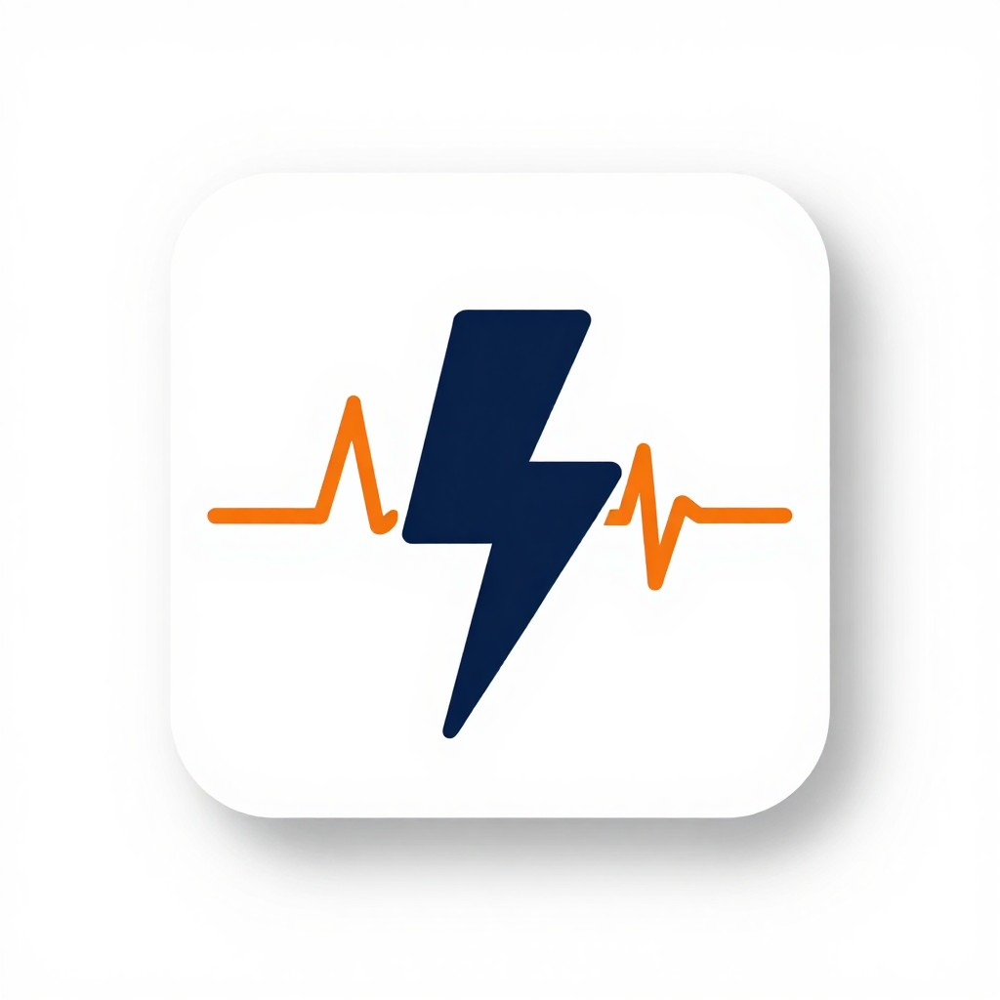

Питание, тренировки, ментальное здоровье и отказ от курения — всё, что нужно для крутой жизни. Для тех, кто от 16 до 25.
Четыре направления — один портал. Начни с любого.
Простые рецепты, основы КБЖУ и чек-листы продуктов для здорового рациона.
ПерейтиУпражнения без инвентаря, уровни сложности и видео с правильной техникой.
ПерейтиТрекер дней без сигарет, калькулятор экономии и советы по преодолению тяги.
ПерейтиСон, стресс, дыхательные практики и таймер для релакса.
ПерейтиНе нужно сидеть на диетах. Простые рецепты, понятные КБЖУ и чек-листы продуктов — питание без стресса.
Упражнения без инвентаря для дома, улицы и общаги. Выбирай уровень — от новичка до продвинутого.
Трекер дней без курения, калькулятор сэкономленных денег и конкретные советы, когда тяга накрывает.
Сон, управление стрессом, дыхательные техники и таймер для медитации. Просто и доступно.

Импульс